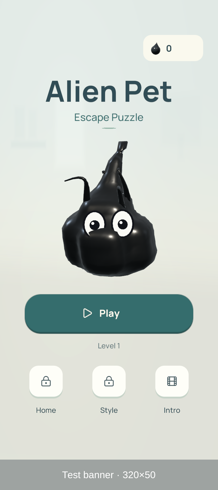
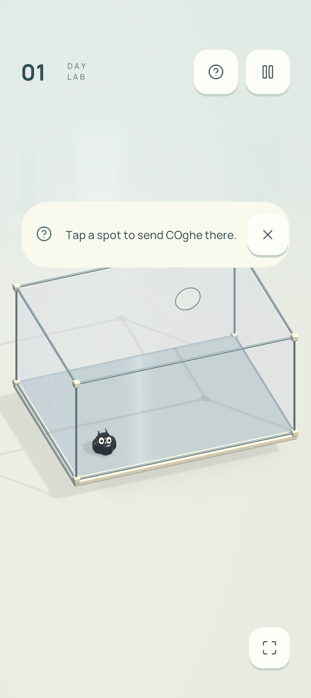
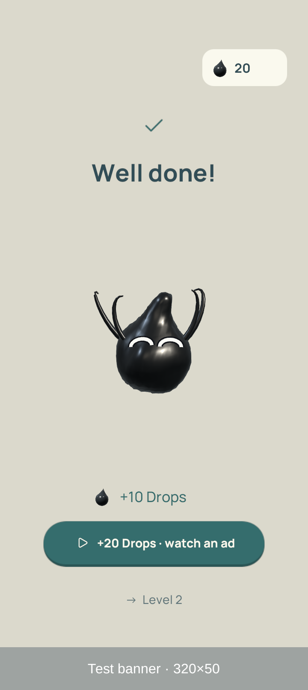
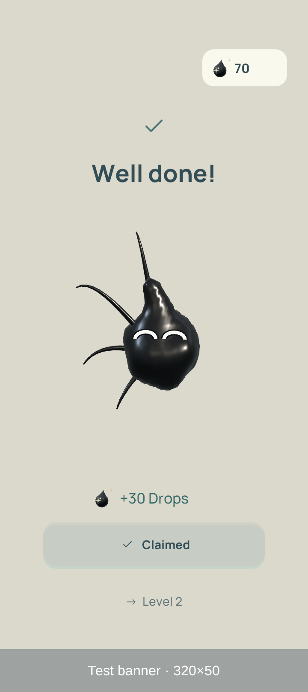
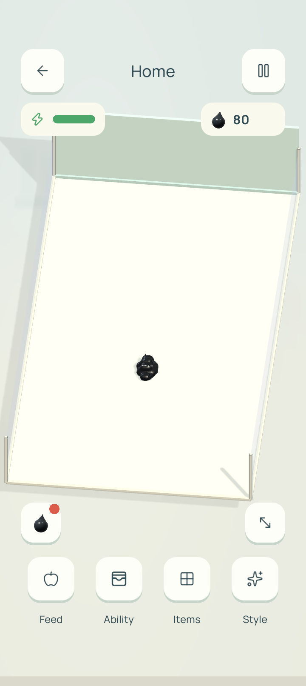
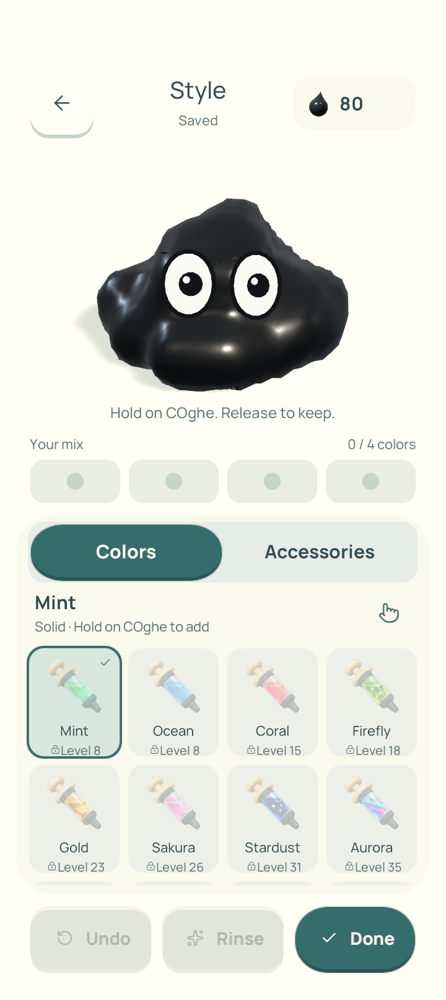

Tối ưu CPU.
Giữ nguyên đồ hoạ.
Bằng chứng đo trên OPPO CPH2591. Release đánh giá nhịp khung hình; Unity Profiler giải thích phần việc CPU. Kết quả thiếu được giữ ở trạng thái chờ.
Mục chờ: Không còn mục chờ.
Vấn đề / ID: full65, full65-level-10, full65-level-18, full65-level-27, full65-level-32, full65-level-48, full65-level-51, full65-level-56, full65-level-57, native-recheck-after-1-level-27, native-recheck-after-1-level-32, native-recheck-after-1-level-56, native-recheck-after-1-level-57, native-recheck-after-2-level-27, native-recheck-after-2-level-32, native-recheck-after-2-level-57, native-recheck-after-3-level-27, native-recheck-after-3-level-56, native-recheck-after-3-level-57, native-recheck-after-only-first-error-level-27, native-recheck-after-only-first-error-level-56, native-recheck-after-only-first-errors, native-recheck-before-1-level-27, native-recheck-before-1-level-57, native-recheck-before-2-level-27, native-recheck-before-2-level-32, native-recheck-before-2-level-56, native-recheck-before-2-level-57, native-recheck-before-3-level-27, native-recheck-before-3-level-32, native-recheck-before-3-level-57, native-rechecks, release-thermal-band, thermal-B2, thermal-B3, thermal-F3
Trước và sau, theo từng màn
FPS là trung vị của FPS từng lần chạy; p99 là trung vị của p99 từng lần chạy, đơn vị ms. Chữ nhỏ là khoảng min–max giữa các lần đo. FPS cao hơn tốt hơn; p99 thấp hơn tốt hơn.
| Màn | FPS | Frame p99 · ms | Lần đo trước / sau | |||
|---|---|---|---|---|---|---|
| Trước | Sau | Thay đổi | Trước | Sau | ||
| 02 | 46.5846.58–46.91 | 45.7645.03–46.09 | -1.7% | 32.7532.70–32.89 | 48.9532.70–49.00 | 3 / 3 |
| 07 | 29.7229.64–29.81 | 29.7529.54–29.77 | +0.1% | 65.3249.10–65.34 | 49.0849.06–49.09 | 3 / 3 |
| 23 | 29.6629.62–29.71 | 29.8529.76–29.99 | +0.6% | 65.3449.10–65.35 | 65.3249.09–65.33 | 3 / 3 |
| 53 | 27.1127.11–27.27 | 27.4727.32–27.50 | +1.3% | 212.36212.32–212.37 | 212.27196.08–212.33 | 3 / 3 |
| 65 | 28.8428.59–28.99 | 28.9028.70–28.90 | +0.2% | 65.3765.36–65.41 | 65.3565.34–65.35 | 3 / 3 |
Màn 2: FPS 46.58 → 45.76; p99 32.75 → 48.95 ms. Không phải mọi chỉ số đều cải thiện.
FPS, tail và maxGraph chỉ bao phủ cửa sổ lấy mẫu: 96.42–98.42%, trung vị 97.28% trên 30 bản ghi theo tổng thời gian frame đã ghi / thời gian tuyến chạy; không có bộ đếm mọi frame của toàn tuyến. Hai frame chẩn đoán trước mỗi touch mới được loại khỏi mẫu; phép dựng graph đồng bộ của touch mới không bị chủ động loại. Vật lý và công việc từ lệnh trước vẫn có thể chạy trong khoảng ngắt đó; tail và maxGraph không phải cực trị đầy đủ của toàn tuyến.
Nhiệt và thermal status thực tế · B = trước, F = bản cuối
| Lượt | Pin đầu → cuối · °C | Khoảng pin · °C | Status đầu → cuối | Status đã ghi | Toàn lượt theo mẫu |
|---|---|---|---|---|---|
| B1 | 36 → 37 | 36–37 | 1 → 1 | 1 | Trong dải |
| F1 | 37 → 37 | 36–37 | 1 → 1 | 1 | Trong dải |
| F2 | 37 → 37 | 37–37 | 1 → 1 | 1 | Trong dải |
| B2 | 37 → 38 | 37–38 | 1 → 2 | 1, 2 | Lệch dải |
| B3 | 37 → 38 | 37–38 | 1 → 2 | 1, 2 | Lệch dải |
| F3 | 38 → 38 | 37–38 | 1 → 2 | 1, 2 | Lệch dải |
B2, B3, F3 rời dải nhiệt/trạng thái trong lượt chạy. Cổng bắt đầu yêu cầu pin 36–38°C, thermal status 1. Qua cổng không đồng nghĩa toàn bộ lượt chạy được kiểm soát nhiệt; không đo xung CPU/core/GPU.
Công việc tạo skin và dựng đồ thị đường đi
| Màn | Skin · ms/frame | Graph · ms/frame | Graph đỉnh · ms/frame | Lần đo trước / sau | |||
|---|---|---|---|---|---|---|---|
| Trước | Sau | Trước | Sau | Trước | Sau | ||
| 02 | 3.49 | 3.27 | 0.00 | 0.00 | 0.00 | 0.00 | 3 / 3 |
| 07 | 5.96 | 5.58 | 0.20 | 0.18 | 35.83 | 28.76 | 3 / 3 |
| 23 | 10.79 | 8.93 | 0.26 | 0.31 | 35.90 | 48.35 | 3 / 3 |
| 53 | 7.51 | 5.98 | 2.55 | 2.16 | 195.30 | 199.07 | 3 / 3 |
| 65 | 6.36 | 5.66 | 0.73 | 0.73 | 49.85 | 50.88 | 3 / 3 |
Trung vị giữa các lần chạy. Timer Stopwatch đo thời gian trôi qua trong frame lấy mẫu, không phải CPU busy. “Graph đỉnh” là trung vị của tổng timer graph lớn nhất trong một frame mỗi lượt. Các timer có thể lồng nhau; không cộng các cột. Mã navigation đã được khôi phục về bản gốc; thay đổi giữ lại chỉ ở skin và công việc mỗi tick. Mức tiết kiệm skin vừa phải, không xác lập cải thiện graph trên mọi màn.
Dấu vết CPU được tách riêng
Unity binary Profiler và Profile Analyzer, không Deep Profile. Trung vị của thời gian marker trên mỗi frame capture, tính riêng từng lần chạy. “—” nghĩa là không có marker được xuất; không thay bằng số 0.
| Màn | Skin.Rebuild · ms/frame | BuildGraph · ms/frame | Lần đo trước / sau | ||
|---|---|---|---|---|---|
| Trước | Sau | Trước | Sau | ||
| 02 | 4.351 | 3.345 | — | — | 3 / 3 |
| 07 | 4.604 | 4.149 | 0.174 | 0.140 | 3 / 3 |
| 23 | 9.975 | 6.876 | 0.239 | 0.210 | 3 / 3 |
| 53 | 8.950 | 6.271 | 3.535 | 2.932 | 3 / 3 |
| 65 | 5.695 | 4.663 | 0.529 | 0.475 | 3 / 3 |
Profile Analyzer 1.4.0 đã chạy Compare màn 53: 560 → 609 frame, 667 marker ghép cặp. Đây là kiểm tra cùng capture, không phải một lần đo bổ sung.
Kết quả Compare 53 · Phân bổ thời gian CPU và giới hạn diễn giải
209/209 kiểm thử
Đếm trực tiếp từ danh sách kết quả Editor và đối chiếu tổng. Kiểm thử tính tương đương, chiến dịch và Product UI bổ sung cho đo trên máy.
- tests-final-targeted.xml27/27
- tests-final-campaign-product.xml182/182
Giữ nguyên vật lý, split/merge, thứ tự màn, shader, material, ánh sáng, mật độ mesh và nhịp cập nhật theo phạm vi đã duyệt. Đây là hợp đồng thay đổi; không phải phép đo pixel từng frame.
57/65 màn
Đã ghi nhận 65/65 màn: 57 qua, 8 không qua, 0 chưa có kết quả; 0 lỗi trong báo cáo chạy. Màn không qua: 10, 18, 27, 32, 48, 51, 56, 57. Trung vị FPS giữa các màn: 29.82; đây không phải FPS gộp theo frame.
Cùng 5 màn sau toàn chiến dịch
5/5 màn đã ghi: 5 qua, 0 không qua.
Một lượt lặp mô tả trạng thái máy sau full65, không chờ nguội hay thêm warmup; không đưa vào ba lượt A/B chính.
| Màn | Kết quả | FPS | p99 · ms | Graph đỉnh · ms |
|---|---|---|---|---|
| 02 | Qua | 42.29 | 49.02 | 0.00 |
| 07 | Qua | 29.69 | 65.34 | 33.65 |
| 23 | Qua | 29.67 | 65.33 | 40.90 |
| 53 | Qua | 26.56 | 245.00 | 230.63 |
| 65 | Qua | 28.39 | 81.68 | 54.73 |
Các màn cần đối chiếu riêng
6 / 6 lượt riêng đã xác nhận. Đã xác minh APK cuối và game ở foreground sau lặp riêng.
- Màn 27: System.InvalidOperationException: Across the back road onto the right shelf, clear of P2 (after-1; đã ghi 3/3 baseline và 3/3 bản cuối). Baseline: System.InvalidOperationException: All parts meet and fuse
- Màn 56: System.InvalidOperationException: Handle C rejected: Cơ quan đang thực hiện (after-1, after-3; đã ghi 3/3 baseline và 3/3 bản cuối). Baseline: System.InvalidOperationException: Handle C rejected:
Hai bản cùng không qua một màn không loại trừ hồi quy. Các chữ ký lỗi đầu khác nhau vẫn cần điều tra; chưa quy nguyên nhân cho thay đổi mã.
Mỗi phía cần 3 lượt riêng; cột tỷ lệ là số lượt qua / số lượt đã ghi. Chỉ dùng run.json hoàn chỉnh được runner ghi nhận. Kết quả full65 gốc luôn giữ nguyên; lượt riêng không thay thế kết quả đó và không dùng để kết luận FPS. Chữ ký lỗi là dòng lỗi đầu đến trước dấu chấm phẩy, bỏ trạng thái biến thiên và stack trace.
| Màn | Full65 gốc | Baseline · qua / ghi | Bản cuối · qua / ghi | Quan sát chức năng |
|---|---|---|---|---|
| 10 | Không qua | 3 / 3 | 3 / 3 | Chưa tái hiện ở lượt riêng |
| 27 | Không qua | 0 / 3 | 0 / 3 | Lỗi đầu chưa thấy ở baseline · cần điều tra |
| Baseline · lỗi đầu: System.InvalidOperationException: All parts meet and fuse (before-1, before-2, before-3) | ||||
| Bản cuối · lỗi đầu: System.InvalidOperationException: Across the back road onto the right shelf, clear of P2 (after-1); System.InvalidOperationException: All parts meet and fuse (after-2, after-3) | ||||
| 32 | Không qua | 1 / 3 | 1 / 3 | Cả hai bản có thất bại · xem lỗi đầu |
| Baseline · lỗi đầu: System.InvalidOperationException: No visible floor command for part 1 at (0.050, -0.300, -0.240) (before-2, before-3) | ||||
| Bản cuối · lỗi đầu: System.InvalidOperationException: No visible floor command for part 1 at (0.050, -0.300, -0.240) (after-1, after-2) | ||||
| 56 | Không qua | 2 / 3 | 1 / 3 | Lỗi đầu chưa thấy ở baseline · cần điều tra |
| Baseline · lỗi đầu: System.InvalidOperationException: Handle C rejected: (before-2) | ||||
| Bản cuối · lỗi đầu: System.InvalidOperationException: Handle C rejected: Cơ quan đang thực hiện (after-1, after-3) | ||||
| 57 | Không qua | 0 / 3 | 0 / 3 | Cả hai bản có thất bại · xem lỗi đầu |
| Baseline · lỗi đầu: System.InvalidOperationException: All parts meet and fuse (before-1, before-2, before-3) | ||||
| Bản cuối · lỗi đầu: System.InvalidOperationException: All parts meet and fuse (after-1, after-2, after-3) | ||||
Không có màn baseline qua đủ 3 lượt nhưng bản cuối thất bại trong tập đã ghi. Đây chỉ là đối chiếu tỷ lệ qua màn; không phải kết luận không có hồi quy. Cần đối chiếu cả bước lỗi đầu. Lượt chức năng riêng không cân bằng nhiệt: baseline 40–41°C/trạng thái 2; bản cuối 41–42°C/trạng thái 2–3. Không dùng tập này để suy ra FPS hay nguyên nhân thay đổi.
Product UI trên bản Release
Product proof: Đã xác minh. SHA-256 APK đã cài và mở game thường: Đã xác minh.
Sáu ảnh từ Product proof trên cùng APK cuối, trước các lượt lặp riêng. Đây là kiểm chứng giao diện riêng, không phải developer HUD trong phép đo FPS; cài đặt hiện tại được xác minh lại sau các lượt lặp riêng.












Home biến thiên lớn
Baseline Home dao động 29.82–60.24 FPS trên cùng APK. Telemetry hiện có chưa xác định nguyên nhân; không quy biến thiên này cho tối ưu.
Sau tối ưu: 29.89 FPS trung vị, 3/3 lần đo. Product Home được đo riêng với replay trong màn.
Chưa có thời gian GPU
GPU timestamp không khả dụng ở cấu hình Android Vulkan này. Present wait và semaphore wait không đại diện cho thời gian GPU thực thi.
Main/render thread có thời gian chờ và chồng lấn. Nhiệt pin bằng nhau trong Release cũng không chứng minh xung CPU hay trạng thái nhiệt bằng nhau.
Nguồn dữ liệu & bản dựng
Liên kết cục bộ tới dữ liệu có sẵn. Báo cáo chỉ lưu số tổng hợp; raw capture, frame arrays và thông tin thiết bị riêng tư không được sao chép vào đây.
Trạng thái nguồn và SHA-256 bản dựng
- So sánh FPS / ProfilerCó dữ liệu
- Release CPUCó dữ liệu
- Editor testsCó dữ liệu
- APK releaseCó dữ liệu
- APK profilerCó dữ liệu
- Release toàn chiến dịchCó dữ liệu
- Lặp cùng màn sau warm soakCó dữ liệu
- Nhiệt Release đã ghiCó dữ liệu
- Profile Analyzer Compare · màn 53Có dữ liệu
- Cài đặt Release cuối trên OPPOCó dữ liệu
- Lặp kiểm tra chức năng trên hai APKCó dữ liệu
- Lặp chức năng before-1Có dữ liệu
- Lặp chức năng before-2Có dữ liệu
- Lặp chức năng before-3Có dữ liệu
- Lặp chức năng after-1Có dữ liệu
- Lặp chức năng after-2Có dữ liệu
- Lặp chức năng after-3Có dữ liệu
- Audit cửa sổ lấy mẫu ReleaseCó dữ liệu
26df2c98969cd38f500708e2c364e9a82dd9090bbb1407b5babdd6efe4e5fb39b785169fb186a3aebc3d9ec6113062e6fb6648d2fce1656a723ed88358a77043Manifest ready ghi nhận APK đã dựng; không tự xác nhận APK đang cài trên máy.